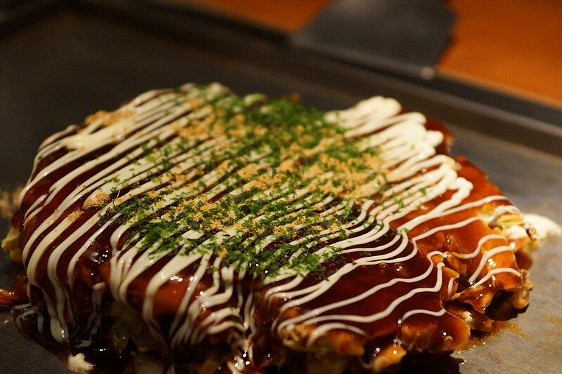

Okonomiyaki

Source: https://upload.wikimedia.org/wikipedia/commons/thumb/5/59/Okonomiyaki_001.jpg/800px-Okonomiyaki_001.jpg
Description
Okonomiyaki (Japanese: お好み焼き) is a Japanese teppanyaki savory pancake dish consisting of
wheat flour batter and other ingredients (mixed, or as toppings) cooked on a teppan (flat griddle).
Common additions include cabbage, meat, and seafood, and toppings include
okonomiyaki sauce (made with Worcestershire sauce), aonori (dried seaweed flakes),
katsuobushi (bonito flakes), Japanese mayonnaise, and pickled ginger.
Learn how to make authentic Okonomiyaki, Osaka's famous Japanese street food pancake.
Ingedients
- All-purpose flour (plain flour)
- Salt
- Sugar
- Baking powder
- Grated mountain yam (nagaimo/yamaimo)
- Dashi (Japanese soup stock)
- Eggs
- Tenkasu (tempura scraps)
- Pickled red ginger (kizami shoga)
- Green cabbage
- Sliced pork belly
Steps
- Start by mixing the flour, grated yam, and dashi into a smooth batter. Many say resting the batter helps it develop better flavor and makes the pancakes fluffier. Even letting it sit for a short time while you prepare the other ingredients will make a difference.
- Finely chop the cabbage, slice the green onions, and prepare any proteins or add-ins you plan to use. Drain the cabbage well so the extra water doesn't thin the batter. A salad spinner is especially handy for this step.
- Add the eggs, tempura scraps (tenkasu), and chopped red pickled ginger into the base batter. Gently fold in the finely chopped cabbage until everything is evenly coated. The batter should feel thick and full of cabbage.
- Heat a frying pan or electric griddle over medium heat. Lightly oil the surface and spoon on the batter to form a round pancake about ¾ inch thick. Lay pork belly slices (or your chosen topping) on top, and cook until the bottom is golden before flipping. Cook until both sides are nicely browned and the center is cooked through.
- Transfer the hot okonomiyaki to a plate and brush the surface with okonomiyaki sauce. Drizzle with Japanese mayonnaise, then sprinkle aonori (dried seaweed) and katsuobushi (bonito flakes) on top. The bonito flakes will “dance” with the heat — one of the joys of serving this dish. Enjoy!
Home